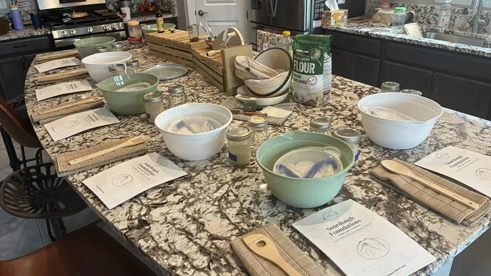

Sourdough 101
$90per person
Sourdough Fundamentals
For complete beginners. No experience needed.
We'll walk through the fundamentals together, from caring for your starter to mixing, shaping and baking a beautiful, crusty loaf. It's fully hands-on and built to give you the confidence to bake at home.
What you'll learn and take home
- How to maintain and feed a sourdough starter
- Proper mixing, shaping and baking techniques
- Your own dough to bake later at home
- A portion of my sourdough starter to keep baking
- A starter kit with everything you need to keep going
Bring: just yourself. You'll need a Dutch oven at home to bake your loaf.
See 101 dates